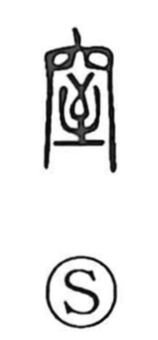

窒

Uncategorized
Kun: fusagu | On: chitsu
to stop up ・ to block ・ to choke ・ suffocation
Explanation
窒 is a phono-semantic character with 至 as its sound-bearing element. 至 originally depicts an arrow that has come to rest at its mark, and in ritual context the arrow functions as a curse tool. The graph expresses that arrow being stopped and plugged, yielding the sense of closing or stopping up. Ancient glosses already define it as ‘to close, to stop up’ (塞ぐ), and from this core idea come the meanings of choking and suffocation.